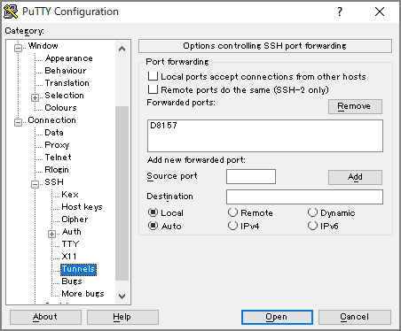

Amazon EMRのWebツール（Gangliaなど）をSSHトンネルを使ってブラウザ表示
Spark Web UI等はマネージメントコンソールでポチっとやれば見れるようになっているが、その他のWeb系のGUIツールはSSHトンネルを駆使して見る必要がある。ステップとしては下記2つをやる必要がある。
- SSHクライアント側でフォワーディングの設定を行う
- ブラウザ側でプロキシの設定を行う
1度やってみると簡単だが、後でやるときに忘れそうなのでメモ。
-
SSHクライアント側でフォワーディングの設定を行う
参考マニュアル
オプション2: パート 1: ダイナミックポートフォワーディングを使用してマスターノードへの SSH トンネルをセットアップする - Amazon EMR https://docs.aws.amazon.com/ja_jp/emr/latest/ManagementGuide/emr-ssh-tunnel.html
-
Xshell6の場合
- トンネリングの設定のフォワーディングルールでDynamicを選択してリッスンポートを8157にする。（使っていないポートなら何でも良いが、後続のプロキシ設定と合わせる必要あり。）

-
Puttyの場合
Connection-SSH-Tunnelsでダイナミックポートフォワードを設定する


Sessionはマスターノードの接続を通常通り行う

-
ブラウザ側のプロキシ設定
参考マニュアル
オプション2: パート 2: マスターノードでホストされる Web サイトを表示するようにプロキシを設定する - Amazon EMR https://docs.aws.amazon.com/ja_jp/emr/latest/ManagementGuide/emr-connect-master-node-proxy.html
- Proxy Switchy Omegaをインストール
https://chrome.google.com/webstore/detail/proxy-switchyomega/padekgcemlokbadohgkifijomclgjgif
-
Proxy Switchy Omegaのオプションを開いてNew Profileを選択

-
Profile NameとPAC Profileを選択

-
PAC Scriptの入力項目に下記を貼り付けた後にApply Changesを選択
function FindProxyForURL(url, host) { if (shExpMatch(url, "*ec2*.amazonaws.com*")) return 'SOCKS5 localhost:8157'; if (shExpMatch(url, "*ec2*.compute*")) return 'SOCKS5 localhost:8157'; if (shExpMatch(url, "http://10.*")) return 'SOCKS5 localhost:8157'; if (shExpMatch(url, "*10*.compute*")) return 'SOCKS5 localhost:8157'; if (shExpMatch(url, "*10*.amazonaws.com*")) return 'SOCKS5 localhost:8157'; if (shExpMatch(url, "*.compute.internal*")) return 'SOCKS5 localhost:8157'; if (shExpMatch(url, "*ec2.internal*")) return 'SOCKS5 localhost:8157'; return 'DIRECT'; }
ここまで終わったら下記のURLにアクセスすることで各Web UIにアクセスが出来るようになる。

関連しているかもしれない記事
- PySparkでUDFを使用する場合の性能面の注意点
- EMRのエラーをS3のログから確認
- EMR Pysparkでデータフレームを縦に連結してデータを増幅させる
- Redshiftのdecimalの数値計算時の注意点
- Redshiftのskew tableを確認する